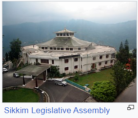

GOVERNMENT

According to the Constitution of India, Sikkim has a parliamentary system of representative democracy for its governance;
universal suffrage is granted to state residents.
The government structure is organised into three branches:
Executive: As with all states of India, a governor stands at the head of the executive power of state,
just as the president is the head of the executive power in the Union, and is appointed by the President of India.
The governor's appointment is largely ceremonial, and his or her main role is to oversee the swearing-in of the chief minister.
The chief minister, who holds the real executive powers, is the head of the party or coalition garnering
the largest majority in the state elections. The governor also appoints cabinet ministers on the advice of the chief minister.
Legislature: Sikkim has a unicameral legislature, the Sikkim Legislative Assembly, like most other Indian states.
Its state assembly has 32 seats, including one reserved for the Sangha.
Sikkim is allocated one seat in each of the two chambers of India's national bicameral legislature, the Lok Sabha and the Rajya Sabha.
Judiciary: The judiciary consists of the Sikkim High Court and a system of lower courts.
The High Court, located at Gangtok, has a Chief Justice along with two permanent justices.
The Sikkim High Court is the smallest state high court in the country.
In 1975, after the abrogation of Sikkim's monarchy, the Indian National Congress gained a majority in the 1977 elections.
In 1979, after a period of instability, a popular ministry headed by Nar Bahadur Bhandari,
leader of the Sikkim Sangram Parishad Party, was sworn in.
Bhandari held on to power in the 1984 and 1989 elections.
In the 1994 elections, Pawan Kumar Chamling of the Sikkim Democratic Front
became the Chief Minister of the state. Chamling and his party had since held on to power
by winning the 1999, 2004, 2009 and 2014 elections.
However, the 2019 legislative assembly elections were won by the Sikkim
Krantikari Morcha party and the chief minister since then is Prem Singh Tamang.
The current Governor of Sikkim is Lakshman Acharya.